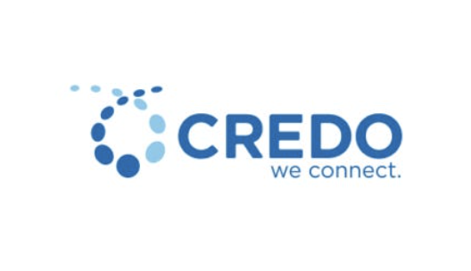
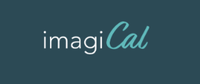

menu
click on "order this" to learn more about my involvements 🍵

Credo Semiconductor
Management Information System Engineer
Credo is a semiconductor company specializing in high-speed connectivity solutions.
I designed and rebuilt their current product data management system from scratch using Figma, HTML, CSS and JS. I collaborated closely with the Operations department to gather feedback, understand workflow needs, and refine system features.

ImagiCAL
Strategy Director
ImagiCal is UC Berkeley's student-run creative marketing and strategy agency, where students collaborate to build advertising campaigns for real clients using research, strategy, and creative execution.
As the strategy director, I lead an 8 member team through consumer research and audience segmentation to guide our annual national advertising campaign. I create weekly slide decks through Powerpoint to facilitate weekly discussions that synthesize survey data and cultural trends.
Klickly
Account Strategy Intern
Klickly is the first AI-driven, real-time consumer data software that enables distributed commerce.
Academic Peer Counseling Club
Events Coordinator
The Academic Peer Counseling club is a student organization dedicated to destigmatizing mental health, supporting academic success, and guiding new and transfer students.
As the Events Coordinator, I created initiatives that strengthened our campus community. I launched our "Random Acts of Kindness" program, which continues today as a signature tradition to promoting positivity and kindness. Additionally, I produced Instagram videos that reached over 2,000 views, helping increase visibility for the club.